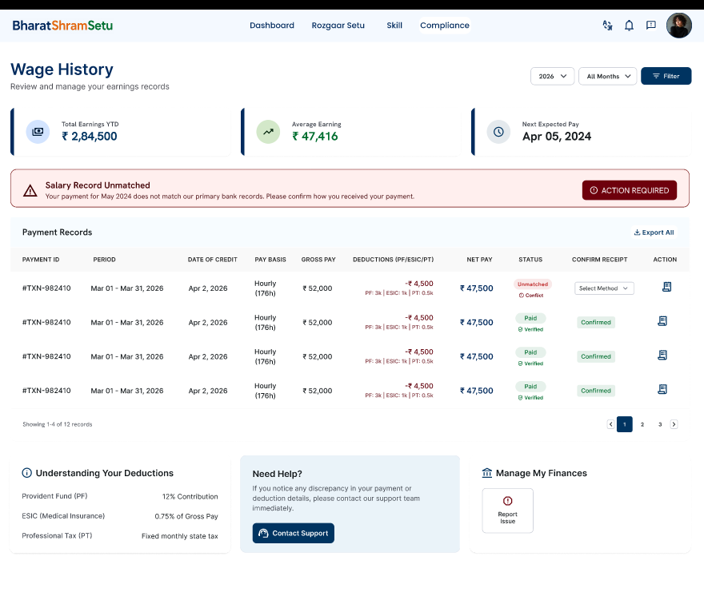
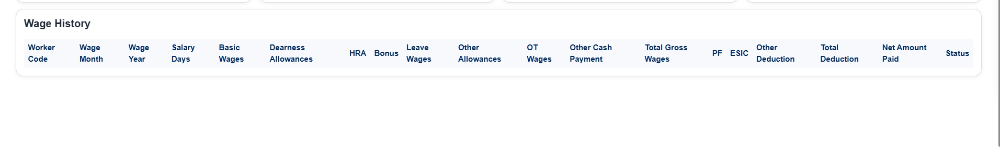
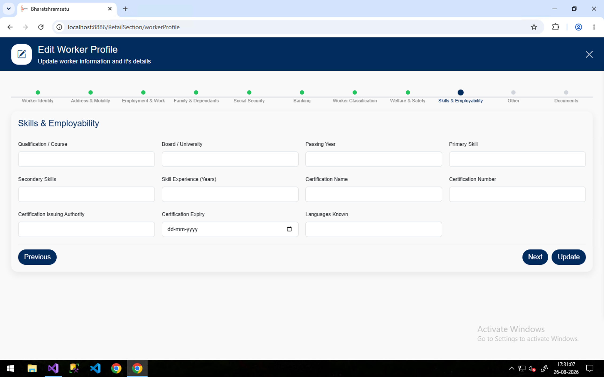
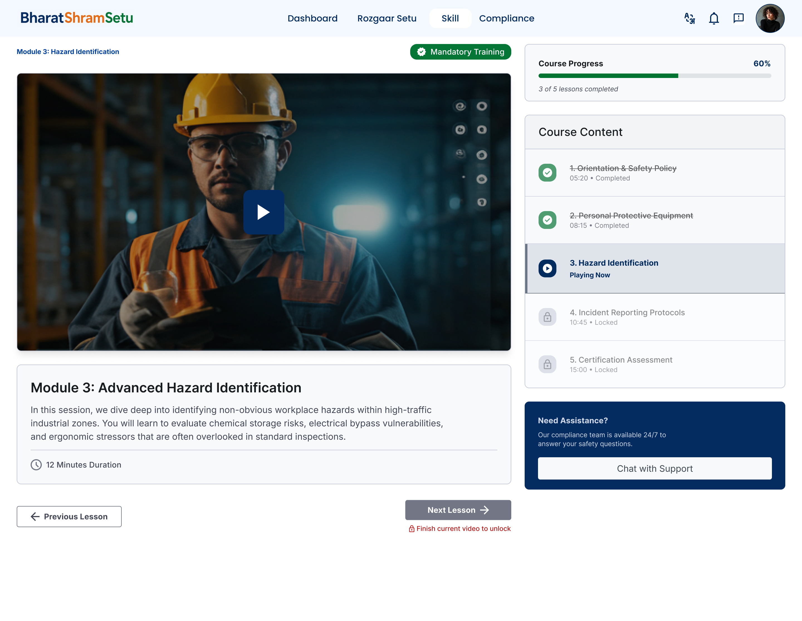
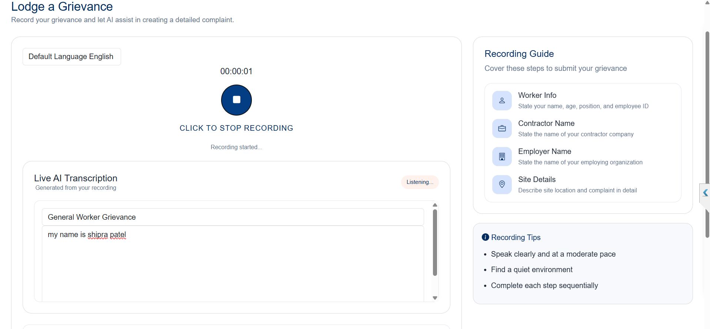
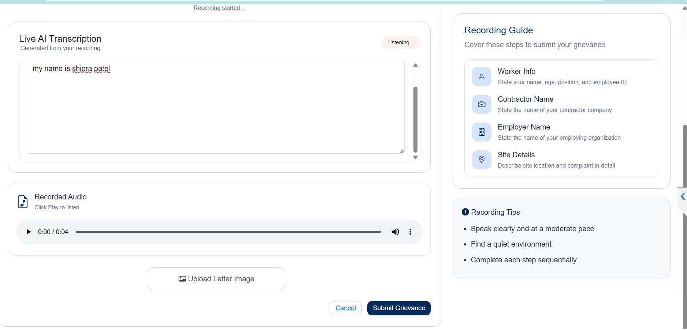
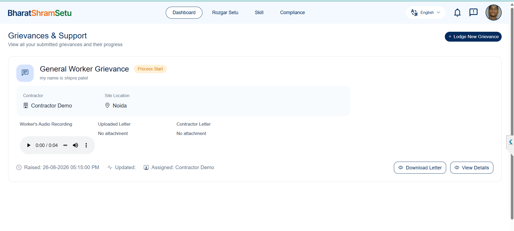

Bharat Shram Setu — Unified Authentication & Database Design Reference
role
value and an account_active status. On the Secure Authentication screen,
the user is asked to Select Role from the login roles below.
| Item | Text (source: Instructions sheet) |
|---|---|
| Purpose | Universal worker profile for organised, unorganised, contract, migrant, construction, gig and platform workers. |
| How to use | Enter worker-provided information in the “Worker Input / Value” column. System/API fields can be populated automatically during implementation. |
| Important | Sensitive identity and financial fields should be masked/encrypted and collected only with appropriate consent and lawful purpose. |
The registered worker who owns and controls their own profile. Has full access to their own data.
WorkerA contractor or supervisor who engages and deploys workers. Binding to a worker is a relationship state, not a separate role.
Login RoleThe principal employer, site owner, or establishment with an employment relationship to workers.
Login RoleAuthorised government officer with read, reporting, and compliance (inspection) access within their jurisdiction.
Login RoleGovernment-side administrative user with higher access than the standard inspector.
Login RoleGeneral internal platform staff with routine operational access.
Login RoleInternal platform technical team responsible for technical support, maintenance, and task force duties.
Login RoleThe highest internal administrator with full control over users, accounts, and the entire permission surface.
Login RoleAn unauthenticated visitor / guest who can view limited public profile information only. Not offered on the login screen.
Guest / Non-login
The role column of the auth table uses the following values:
The following sections describe signup / login options, authentication methods, and how each base role authenticates.
The login screen presents the following login roles:
A user can register using multiple identification (signup) modes. Credentials are stored variationally in the
user_credentials child table rather than as fixed email/mobile columns on the user, so a single
account can register and later sign in with more than one mode.
| Signup Option | Type | Description |
|---|---|---|
| Email email | Credential | Register with an email address |
| Phone mobile | Credential | Register with a mobile number |
| Aadhaar Login aadhaar | Credential / Single Sign-On | Register / sign in using Aadhaar-based authentication (OTP / secure) |
| Login ID login_id | Credential | Internal platform ID used by BSS Staff / IT Task Force |
Role-based signup — who signs up how:
| Role | Signup Mode(s) | How Signup Is Handled |
|---|---|---|
| Worker | aadhaar (primary), mobile, email | Self signup — registers via Aadhaar (OTP / secure) as the primary mode; can also use mobile number or email |
| Contractor | aadhaar, email / mobile | Self signup via Aadhaar, email, or mobile; contractor code assigned after approval |
| Employer | aadhaar, email / mobile | Self signup via Aadhaar, email, or mobile; LIN assigned after approval |
| Government – Inspector | mobile / email / login_id | Created by Super Admin or self signup via mobile, email, or login_id; jurisdiction assigned by admin |
| Government – Admin | mobile / email / login_id | Created by Super Admin or self signup via mobile, email, or login_id; jurisdiction assigned by admin |
| BSS Staff | mobile / email / login_id | Created by Super Admin with mobile / email / login_id |
| IT Task Force | mobile / email / login_id | Created by Super Admin with mobile / email / login_id |
| Public | None | No signup / login — guest viewer only |
For login, the platform allows the following authentication (verification) methods. These are the ways a user proves their identity when signing in, independent of which identifier they use.
| Method | Type | Description |
|---|---|---|
| Phone Number Login | Phone Number | Login using the mobile number as the identifier, with OTP verification sent via SMS, WhatsApp, or phone call. |
| Email + Password | Email & Password | Login using an email identifier along with a stored hashed password. |
| Email + MPIN | Email & MPIN | Login using an email identifier along with a numeric MPIN (mobile PIN). |
| ID + MPIN | Login ID & MPIN | Login using a login ID (internal platform ID) along with a numeric MPIN. |
| ID + Password | Login ID & Password | Login using a login ID (internal platform ID) along with a stored hashed password. |
There is a single Super Admin role. Other privileged roles — IT Task Force, Government (Inspector and Admin), and BSS Staff — are separate roles, each with their own users. The Super Admin has full control over users and accounts.
| Capability | Description |
|---|---|
| Create any user | Create a user with any role (Worker, Contractor, Employer, Government Inspector, Government Admin, BSS Staff, IT Task Force) |
| Assign role | Assign or change a user's role at creation or later |
| Activate account | Activate a user's account so they can sign in |
| Deactivate account | Deactivate any user's account to block sign-in |
| Manage credentials | Set up / reset the user's signup identifiers (mobile / email / aadhaar / login_id) |
account_active flag on the users table. A deactivated account cannot sign in regardless of role.| Column | Type | Description |
|---|---|---|
id |
UUID / BIGINT | Primary key |
role |
ENUM | Role type — one of the 7 values listed above |
account_active |
BOOLEAN | Whether the account is active or inactive |
created_at |
TIMESTAMP | Account creation time |
updated_at |
TIMESTAMP | Last update time |
Stores one row per identification mode a user has signed up with. A user can have multiple credentials (mobile, email, aadhaar, login_id) and can sign in using any of the supported authentication methods.
| Column | Type | Description |
|---|---|---|
id |
UUID / BIGINT | Primary key |
user_id |
FK | References users.id |
identity_type |
ENUM | mobile / email / aadhaar / login_id |
identity_value |
VARCHAR | The identifier value (mobile number, email, Aadhaar, login ID) |
is_primary |
BOOLEAN | Whether this is the primary identifier (e.g., Aadhaar primary for Worker) |
verified |
BOOLEAN | Whether the identifier has been verified |
password_hash |
VARCHAR / NULL | Hashed password for password-based login (email + password, ID + password) |
mpin_hash |
VARCHAR / NULL | Hashed numeric MPIN for MPIN-based login (email + MPIN, ID + MPIN) |
created_at |
TIMESTAMP | Credential creation time |
users. Identification modes are stored variationally in user_credentials, one row per identifier. OTP-based login (phone number) is verified via verified + an OTP flow and does not need a stored hash.
Only the Worker profile is fully defined at present, based on the Worker form & Access
sheet of the source workbook. It is linked back to the unified users table via user_id
(role = 'worker') and is organised into 10 resource tables (one per section of the
form). Worker data is pure data — no permission columns live on these tables. Every field-level access
rule lives in the single RBAC permissions table.
Alongside the worker resources sit the role profile tables (contractor_profiles,
employer_profiles, government_profile, bss_staff_profile,
it_profile), the site table, and the worker_contractor_binding
link. Contractor / employer / site details are not stored inline on the worker employment row — they are
referenced via worker_employment.assignment_id → worker_contractor_binding, and the worker’s
employer is derived through the site (site.employer_id). These relations follow the E–C–S–W
binding constraints (1 worker = 1 site; one contractor may bind to many employers through many sites).
FINAL/Db/schema.sql. Permission seed (1,660 rows):
FINAL/Db/seed_rbac.sql; QR access profile seed:
FINAL/Db/seed_qr.sql; reference / dropdown seed:
FINAL/Db/seed_lookup.sql; worker-category master seed:
FINAL/Db/seed_worker_category.sql; skill master seed:
FINAL/Db/seed_skill_master.sql; document master seed:
FINAL/Db/seed_document_master.sql (all regenerate with generate_seed_rbac.py).
Every worker belongs to exactly one row in each resource table (linked by user_id), except
worker_employment and worker_family_dependants which can hold multiple rows per worker
(multiple employments / dependants). The resource value in rbac_permissions matches the
section name below. The role profile / site / binding tables that follow in sections 11–14 are the linked
references for contractor, employer and site data.
| # | Table | resource | Fields | Data Owner(s) | Notes |
|---|---|---|---|---|---|
| 1 | worker_identity | worker_identity | 23 | System / Aadhaar / Worker | Aadhaar & PAN stored encrypted |
| 2 | worker_address_mobility | address_mobility | 12 | Worker / Aadhaar / System | Current + permanent address |
| 3 | worker_family_dependants | family_dependants | 13 | Worker | Multi-row; nominee + dependant details |
| 4 | worker_social_security | social_security | 7 | UAN / ESIC / Worker | EPFO, ESIC, e-Shram, BOCW etc. |
| 5 | worker_welfare_safety | welfare_safety | 21 | Contractor / System / Gate-Pass | PPE, gate passes, medical |
| 6 | worker_banking | banking | 6 | Bank / Worker | Sensitive; account no. encrypted |
| 7 | worker_classification | worker_classification | 35 | Worker / System | Category, sector, gig / self-emp / seasonal |
| 8 | worker_employment | employment_work | 15 | Contractor / System / Worker | Multi-row; links to binding via assignment_id (site & contractor / employer are referenced, not stored) |
| 9 | worker_skills_employability | skills_employability | 11 | Worker / API's | Qualification, skills, certifications |
| 10 | worker_other | other | 7 | System / Worker | Consent + QR opt-in + registration audit trail |
| Column | Type | Data Owner | Description |
|---|---|---|---|
id | BIGSERIAL | System | Primary key |
user_id | FK → users | System | 1:1 with users (role = worker) |
bss_worker_id | VARCHAR(20) | System | Public-safe: BSS + 12 digit, unique |
name | VARCHAR(120) | Aadhaar | Name as per Aadhaar; public sees verified-only |
gender | VARCHAR(10) | Aadhaar | Male / Female / Other |
date_of_birth | DATE | Aadhaar | DOB; prefer age band |
age | SMALLINT | System | Derived from DOB |
mobile_number | VARCHAR(20) | System | Primary mobile |
alternate_mobile | VARCHAR(20) | Worker | Alternate mobile |
email | VARCHAR(120) | Worker | Email ID |
marital_status | VARCHAR(20) | Worker | Married / Unmarried / Widowed / Divorced |
father_name | VARCHAR(120) | Aadhaar | Father's name |
mother_name | VARCHAR(120) | Worker | Mother's name |
spouse_name | VARCHAR(120) | Worker | Spouse's name |
emergency_contact_name | VARCHAR(120) | Worker | Emergency contact — name |
emergency_contact_number | VARCHAR(20) | Worker | Emergency contact — number |
emergency_contact_relation | VARCHAR(60) | Worker | Emergency contact — relationship |
disability_status | VARCHAR(40) | Worker | Sensitive — consent/authority required |
disability_type_pct | VARCHAR(80) | Worker | Sensitive — type / % |
blood_group | VARCHAR(10) | Worker | Blood group |
religion | VARCHAR(40) | Worker | Sensitive — consent required |
caste | VARCHAR(40) | Worker | Sensitive — consent required |
photo | VARCHAR(255) | Aadhaar | Photo reference |
pan | VARCHAR(20) | PAN | Encrypted; show verification status |
aadhaar | VARCHAR(20) | Aadhaar | Encrypted; primary identifier |
created_at / updated_at | TIMESTAMP | System | Audit timestamps |
Stores current and permanent location details of the worker (Address & Mobility section). Fields marked “Aadhaar” are pre-filled from the Aadhaar record.
| Column | Type | Data Owner | Description |
|---|---|---|---|
id | BIGSERIAL | System | Primary key |
user_id | FK → users | System | 1:1 with users (role = worker) |
current_address | VARCHAR(255) | Worker | Current residential address |
current_state | VARCHAR(60) | Worker | Current state |
current_district | VARCHAR(60) | Worker | Current district |
current_city | VARCHAR(60) | Worker | Current city |
current_pincode | VARCHAR(10) | Worker | Current PIN code |
permanent_address | VARCHAR(255) | Aadhaar | Permanent address (from Aadhaar) |
permanent_state | VARCHAR(60) | Aadhaar | Permanent state |
permanent_district | VARCHAR(60) | Aadhaar | Permanent district |
permanent_city | VARCHAR(60) | Aadhaar | Permanent city |
permanent_pincode | VARCHAR(10) | Aadhaar | Permanent PIN code |
migrant_worker | BOOLEAN | System | Whether worker is a migrant |
migration_type | VARCHAR(40) | System | Type of migration |
created_at | TIMESTAMP | System | Row creation time |
updated_at | TIMESTAMP | System | Last update time |
Stores family & dependant / nominee details. A worker can have multiple dependants, so several rows may exist
per worker (keyed by user_id). Most fields are restricted in RBAC.
| Column | Type | Data Owner | Description |
|---|---|---|---|
id | BIGSERIAL | System | Primary key |
user_id | FK → users | System | References users.id (worker); multi-row |
family_members_count | SMALLINT | Worker | Total family members |
dependants_count | SMALLINT | Worker | Number of dependants |
name | VARCHAR(120) | Worker | Dependant / family member name |
dependant | VARCHAR(40) | Worker | Dependant indicator |
relation | VARCHAR(60) | Worker | Relationship to worker |
nominee_age | SMALLINT | Worker | Nominee age |
nominee_dob | DATE | Worker | Nominee date of birth |
contact | VARCHAR(20) | Worker | Contact number |
address | VARCHAR(255) | Worker | Address |
nominee | BOOLEAN | Worker | Whether this member is the nominee |
nominee_type | VARCHAR(40) | Worker | Type of nominee |
pan_copy_nominee | BOOLEAN | Worker | PAN copy of nominee held (restricted) |
aadhaar_copy_nominee | BOOLEAN | Worker | Aadhaar copy of nominee held (restricted) |
created_at | TIMESTAMP | System | Row creation time |
updated_at | TIMESTAMP | System | Last update time |
Stores social-security identifiers. Each is masked / view-masked in RBAC — verification status is shown, the raw identifier only to authorised roles.


| Column | Type | Data Owner | Description |
|---|---|---|---|
id | BIGSERIAL | System | Primary key |
user_id | FK → users | System | 1:1 with users (worker) |
epfo_uan | VARCHAR(40) | UAN | EPFO UAN (masked / view-masked) |
esic_ip_number | VARCHAR(40) | ESIC | ESIC IP number (masked) |
lwf_no | VARCHAR(40) | Worker | Labour Welfare Fund number |
wc_policy_no | VARCHAR(40) | Worker | Workmen Compensation policy number |
e_shram_no | VARCHAR(40) | Worker | e-Shram registration number |
bocw_reg_number | VARCHAR(40) | Worker | BOCW registration number |
state_worker_id | VARCHAR(40) | Worker | State worker ID (if any) |
created_at | TIMESTAMP | System | Row creation time |
updated_at | TIMESTAMP | System | Last update time |
PPE, gate passes (temporary / permanent), and medical-fitness details. Gate-pass fields are auto-filled from the contractor gate-pass system.
| Column | Type | Data Owner | Description |
|---|---|---|---|
id | BIGSERIAL | System | Primary key |
user_id | FK → users | System | 1:1 with users (worker) |
ppe_required | BOOLEAN | Contractor | Whether PPE is required |
types_of_ppe_given | VARCHAR(120) | Contractor | Types of PPE provided |
safety_training_completed | BOOLEAN | Contractor | Safety training completed |
site_induction_status | VARCHAR(40) | Contractor | Site induction status |
insurance_status | VARCHAR(40) | Contractor | Insurance coverage status |
accomodation_provided | VARCHAR(40) | Contractor | Accommodation provided (restricted) |
police_verification | VARCHAR(40) | System | Police verification status |
training_date | DATE | Contractor | Safety training date |
trainer_name | VARCHAR(120) | Contractor | Trainer name |
temp_gatepass_status | VARCHAR(40) | Gate-Pass | Temporary gate pass status |
tgp_no | VARCHAR(40) | Gate-Pass | Temporary gate pass number |
temp_gatepass_start_date | DATE | Gate-Pass | Temp gate pass start date |
temp_gatepass_end_date | DATE | Gate-Pass | Temp gate pass end date |
permanent_gatepass_status | VARCHAR(40) | Gate-Pass | Permanent gate pass status |
pgp_no | VARCHAR(40) | Gate-Pass | Permanent gate pass number |
permanent_gatepass_start_date | DATE | Gate-Pass | Permanent gate pass start date |
permanent_gatepass_end_date | DATE | Gate-Pass | Permanent gate pass end date |
medical_examination_status | VARCHAR(40) | Contractor | Medical examination status |
last_medical_examination | DATE | Contractor | Last medical examination date |
medical_fitness_status | VARCHAR(40) | Contractor | Medical fitness status |
next_medical_due | DATE | Contractor | Next medical due date |
created_at | TIMESTAMP | System | Row creation time |
updated_at | TIMESTAMP | System | Last update time |
Bank details. The account number is stored encrypted; fields are restricted in RBAC (only Worker own and BSS Super Admin see full).
| Column | Type | Data Owner | Description |
|---|---|---|---|
id | BIGSERIAL | System | Primary key |
user_id | FK → users | System | 1:1 with users (worker) |
bank_name | VARCHAR(120) | Bank | Bank name |
bank_account_holder_name | VARCHAR(120) | Bank | Account holder name |
bank_account_number | VARCHAR(40) | Bank | Account number (encrypted) |
ifsc_code | VARCHAR(20) | Bank | IFSC code |
bank_verification_status | VARCHAR(40) | Bank | Bank account verification status |
upi_enabled | BOOLEAN | Worker | Whether UPI is enabled |
created_at | TIMESTAMP | System | Row creation time |
updated_at | TIMESTAMP | System | Last update time |
Occupation classification plus gig-economy, self-employment, and seasonal sub-details.
| Column | Type | Data Owner | Description |
|---|---|---|---|
| Core | |||
worker_category | VARCHAR(60) | Worker | Worker category |
sector | VARCHAR(80) | Worker | Sector |
industry | VARCHAR(80) | System | Industry |
occupation | VARCHAR(80) | Worker | Occupation |
skill | VARCHAR(80) | Worker | Primary skill |
current_employment_status | VARCHAR(40) | Worker | Current employment status |
total_worker_experience | VARCHAR(40) | System | Total work experience |
| Gig economy | |||
gig_platform_worker_id | VARCHAR(60) | Worker | Gig platform worker ID |
gig_platform_name | VARCHAR(120) | Worker | Gig platform / aggregator name |
gig_platform_type | VARCHAR(60) | Worker | Gig platform type |
gig_date_joined_platform | DATE | Worker | Date joined platform |
gig_avg_hours_per_day | VARCHAR(40) | Worker | Average hours per day |
gig_avg_days_per_week | VARCHAR(40) | Worker | Average days per week |
gig_service_area | VARCHAR(120) | Worker | Service area |
gig_vehicle_type | VARCHAR(60) | Worker | Vehicle type |
gig_vehicle_ownership | VARCHAR(40) | Worker | Vehicle ownership |
gig_dl_number | VARCHAR(40) | Worker | Driving licence number |
gig_dl_expiry | DATE | Worker | Driving licence expiry |
| Self-employment | |||
se_business_name | VARCHAR(120) | Worker | Business / enterprise name |
se_business_type | VARCHAR(60) | Worker | Business type |
se_registration_status | VARCHAR(40) | Worker | Business registration status |
se_start_date | DATE | Worker | Business start date |
se_business_location | VARCHAR(120) | Worker | Business location |
se_avg_hours_per_day | VARCHAR(40) | Worker | Average hours per day |
se_avg_days_per_week | VARCHAR(40) | Worker | Average days per week |
se_num_employees | SMALLINT | Worker | Number of employees |
se_employer_or_business_name | VARCHAR(120) | Worker | Employer / business name |
| Seasonal | |||
season_job_work_type | VARCHAR(80) | Worker | Seasonal job / work type |
season_start_date | DATE | Worker | Season start date |
season_end_date | DATE | Worker | Season end date |
season_avg_hours_per_day | VARCHAR(40) | Worker | Average hours per day |
season_avg_days_per_week | VARCHAR(40) | Worker | Average days per week |
season_work_location | VARCHAR(120) | Worker | Work location / service area |
season_expected_income | VARCHAR(40) | Worker | Expected seasonal income |
season_payment_frequency | VARCHAR(40) | Worker | Payment frequency |
created_at | TIMESTAMP | System | Row creation time |
updated_at | TIMESTAMP | System | Last update time |
Employment / work facts (camp, shift, designation, security / transport, status). Contractor, employer and site
details are not stored here — they are referenced via
assignment_id → worker_contractor_binding (which carries site_id; the employer is
then derived from site.employer_id). Multi-row for history / future engagements.
| Column | Type | Data Owner | Description |
|---|---|---|---|
id | BIGSERIAL | System | Primary key |
user_id | FK → users | System | References users.id (worker); multi-row |
assignment_id | FK → worker_contractor_binding | System | Links to the worker↔contractor↔site binding; drives binding_scope |
camp_no | VARCHAR(40) | Contractor | Labour camp number where housed |
shift | VARCHAR(40) | Contractor | Work shift |
ref_worker_id | VARCHAR(40) | Contractor | Reference worker ID |
doj | DATE | Contractor | Date of joining |
designation | VARCHAR(80) | Contractor | Designation |
department | VARCHAR(80) | Contractor | Department |
id_card_issue_date | DATE | Contractor | ID card issue date |
id_card_validity_till | DATE | Contractor | ID card validity till |
transport_facility | VARCHAR(40) | Contractor | Transport facility |
route | VARCHAR(80) | Contractor | Transport route |
bus_no | VARCHAR(40) | Contractor | Bus number |
status | VARCHAR(40) | Contractor | Employment status |
pf_account | VARCHAR(40) | Worker | PF account (masked / view-masked) |
nature_of_job | VARCHAR(120) | Worker | Nature of job |
type_of_work | VARCHAR(120) | Worker | Type of work |
created_at | TIMESTAMP | System | Row creation time |
updated_at | TIMESTAMP | System | Last update time |
site_name / site_code / site_location / state →
site; contractor_name / contractor_code / contractor_email / contractor_state /
contractor_address / contractor_lin → contractor_profiles;
employer_name / employer_code / employer_email / employer_state / employer_address /
employer_industry / employer_lin → employer_profiles. Their RBAC rows were re-scoped to
those resources in seed_rbac.sql.
Qualifications, skills, and certifications. certification_number is masked / view-masked.


| Column | Type | Data Owner | Description |
|---|---|---|---|
id | BIGSERIAL | System | Primary key |
user_id | FK → users | System | References users.id (worker) |
qualification_course | VARCHAR(120) | Worker / API | Qualification / course |
board_university | VARCHAR(120) | Worker / API | Board / university |
passing_year | VARCHAR(10) | Worker / API | Passing year |
primary_skill | VARCHAR(80) | Worker / API | Primary skill (display text) |
primary_skill_code | VARCHAR(6) | System | Canonical coded reference (S01–S45) → skill_master.code (FK) |
secondary_skills | VARCHAR(255) | Worker / API | Secondary skills (free multi-value comma list) |
skill_experience_years | VARCHAR(20) | Worker / API | Skill experience (years) |
certification_name | VARCHAR(120) | Worker / API | Certification name |
certification_number | VARCHAR(60) | Worker / API | Certification number (masked) |
certification_authority | VARCHAR(120) | Worker / API | Certification issuing authority |
certification_expiry | DATE | Worker / API | Certification expiry |
languages_known | VARCHAR(255) | Worker | Languages known |
created_at | TIMESTAMP | System | Row creation time |
updated_at | TIMESTAMP | System | Last update time |
Consent flags and registration audit trail (who registered the worker, when, and from where). Includes the QR
public-display opt-in (qr_opt_in).
| Column | Type | Data Owner | Description |
|---|---|---|---|
id | BIGSERIAL | System | Primary key |
user_id | FK → users | System | 1:1 with users (worker) |
consent_registration | BOOLEAN | System | Consent for registration |
consent_verification | BOOLEAN | System | Consent for verification / data sharing |
consent_date | DATE | System | Consent date |
qr_opt_in | BOOLEAN | Worker | Public QR display only when opted in; gates optional fields |
registration_source | VARCHAR(80) | System | Registration source |
registered_by | VARCHAR(120) | System | Registered by (user / role) |
registration_date | DATE | System | Registration date |
created_at | TIMESTAMP | System | Row creation time |
updated_at | TIMESTAMP | System | Last update time |
A site belongs to exactly one employer (Site → Many-to-One → Employer). The
worker’s employer is derived from this table via the binding’s site_id. A contractor may
work on many sites, and — because those sites may belong to different employers — one contractor can bind to many
employers.
| Column | Type | Data Owner | Description |
|---|---|---|---|
id | BIGSERIAL | System | Primary key |
site_name | VARCHAR(120) | Employer | Site name |
site_code | VARCHAR(40) | System | Unique site code |
employer_id | FK → users | Employer | Site owner (role = 'employer') — exactly one |
location | VARCHAR(255) | Employer | Site location / address |
city | VARCHAR(60) | Employer | City |
district | VARCHAR(60) | Employer | District |
state | VARCHAR(60) | Employer | State |
pincode | VARCHAR(10) | Employer | PIN code |
created_at | TIMESTAMP | System | Row creation time |
updated_at | TIMESTAMP | System | Last update time |
site_code. Index on employer_id.
Links Worker ↔ Contractor ↔ Site and drives the RBAC binding_scope. When the
binding is ACCEPTED the contractor sees the bound permission
set; otherwise the unbound (supervisor) set. The employer is derived via
site.employer_id. Binding requires dual consent (worker + contractor), verified via
app / IVR / SMS-OTP / voice fallback.
| Column | Type | Data Owner | Description |
|---|---|---|---|
id | BIGSERIAL | System | Primary key |
worker_id | FK → users | Worker | The worker (W) |
contractor_id | FK → users | Contractor | The contractor (C) |
site_id | FK → site | Employer | The site (S); gives the employer (E = site.employer_id) |
binding_status | VARCHAR(20) | System | PENDING / ACCEPTED / REJECTED / CANCELLED / EXPIRED |
consent_worker | BOOLEAN | Worker | Worker’s consent to the binding |
consent_contractor | BOOLEAN | Contractor | Contractor’s consent to the binding |
consent_method | ENUM / NULL | System | app / ivr / sms_otp / voice (fallback) |
accepted_at | TIMESTAMP | System | When the binding was accepted (both consents recorded) |
created_at | TIMESTAMP | System | Row creation time |
updated_at | TIMESTAMP | System | Last update time |
(worker_id, site_id) — enforces 1 worker = 1 site; and
(worker_id, contractor_id, site_id) — the constant E–C–S–W tuple (E derived via site).
Indexes on contractor_id and worker_id.
Each non-worker role stores its own identity in a dedicated profile table, keyed 1:1 to users via
user_id (NOT NULL UNIQUE). Only structure is shown here — these tables are created without
demo rows; the RBAC seed still governs every field.
The contractor’s own registration identity (name, code, contact, labour licence). Referenced by the binding — not stored inline on worker rows.
| Column | Type | Data Owner | Description |
|---|---|---|---|
id | BIGSERIAL | System | Primary key |
user_id | FK → users | System | 1:1 (role = 'contractor') |
contractor_name | VARCHAR(120) | Contractor / System | Contractor name |
contractor_code | VARCHAR(40) | System | Contractor code |
contact_person | VARCHAR(120) | Contractor | Contact person |
mobile | VARCHAR(20) | Contractor | Mobile |
email | VARCHAR(120) | Contractor | Email (masked) |
state | VARCHAR(60) | Contractor | State |
district | VARCHAR(60) | Contractor | District |
address | VARCHAR(255) | Contractor | Registered address (masked) |
gstin | VARCHAR(40) | System | GST number |
pan_no | VARCHAR(20) | Contractor | PAN |
lin | VARCHAR(40) | System | Labour licence number |
approval_status | VARCHAR(20) | System | PENDING / approved etc. |
is_active | BOOLEAN | System | Active flag |
created_at / updated_at | TIMESTAMP | System | Audit timestamps |
The employer’s own registration identity. Referenced by site.employer_id — not stored inline on
worker rows.
| Column | Type | Data Owner | Description |
|---|---|---|---|
id | BIGSERIAL | System | Primary key |
user_id | FK → users | System | 1:1 (role = 'employer') |
employer_name | VARCHAR(120) | Employer / System | Employer name |
employer_code | VARCHAR(40) | System | Employer code |
contact_person | VARCHAR(120) | Employer | Contact person |
mobile | VARCHAR(20) | Employer | Mobile |
email | VARCHAR(120) | Employer | Email (masked) |
state | VARCHAR(60) | Employer | State |
district | VARCHAR(60) | Employer | District |
address | VARCHAR(255) | Employer | Registered address (masked) |
industry | VARCHAR(80) | Employer | Industry |
gstin | VARCHAR(40) | System | GST number |
pan_no | VARCHAR(20) | Employer | PAN |
lin | VARCHAR(40) | System | Labour licence number |
approval_status | VARCHAR(20) | System | PENDING / approved etc. |
is_active | BOOLEAN | System | Active flag |
created_at / updated_at | TIMESTAMP | System | Audit timestamps |
Shared by government_inspector and government_admin, distinguished by
gov_type.
| Column | Type | Data Owner | Description |
|---|---|---|---|
id | BIGSERIAL | System | Primary key |
user_id | FK → users | System | 1:1 (role = inspector or admin) |
gov_type | ENUM | System | inspector / admin |
officer_name | VARCHAR(120) | Government | Officer name |
department | VARCHAR(80) | Government | Department |
designation | VARCHAR(80) | Government | Designation |
jurisdiction | VARCHAR(120) | Government | Jurisdiction (used to scope data access) |
created_at / updated_at | TIMESTAMP | System | Audit timestamps |
| Column | Type | Data Owner | Description |
|---|---|---|---|
id | BIGSERIAL | System | Primary key |
user_id | FK → users | System | 1:1 (role = 'bss_staff') |
employee_code | VARCHAR(40) | BSS | Employee code |
full_name | VARCHAR(120) | BSS | Full name |
department | VARCHAR(80) | BSS | Department |
designation | VARCHAR(80) | BSS | Designation |
mobile | VARCHAR(20) | BSS | Mobile |
email | VARCHAR(120) | BSS | |
created_at / updated_at | TIMESTAMP | System | Audit timestamps |
| Column | Type | Data Owner | Description |
|---|---|---|---|
id | BIGSERIAL | System | Primary key |
user_id | FK → users | System | 1:1 (role = 'it_task_force') |
employee_code | VARCHAR(40) | IT Task Force | Employee code |
full_name | VARCHAR(120) | IT Task Force | Full name |
department | VARCHAR(80) | IT Task Force | Department |
designation | VARCHAR(80) | IT Task Force | Designation |
mobile | VARCHAR(20) | IT Task Force | Mobile |
email | VARCHAR(120) | IT Task Force | |
created_at / updated_at | TIMESTAMP | System | Audit timestamps |
| Rule | Detail |
|---|---|
| Site → Employer | Site belongs to exactly one employer (site.employer_id). |
| Worker → Site | Worker is on exactly one site (UNIQUE(worker_id, site_id)). |
| Worker → Contractor | Worker is bound to one contractor at that site (constant E–C–S–W tuple). |
| Contractor → Employers | One contractor can bind to many employers (indirectly via many sites). |
| Dual consent | Binding requires consent from both worker and contractor before it is ACCEPTED. |
| Verification fallback | Consent verified via app, IVR / SMS-OTP / voice fallback for low-connectivity workers. |
| Bound vs unbound visibility | When bound (ACCEPTED), the contractor sees 100% of the worker’s data; otherwise only limited general info (Name, Age, Sex, Company, Blood Group). |
The QR Role Summary sheet defines how each role ‘sees’ a worker when access is granted via a
QR scan. Modelled by the qr_role_access table (seed:
FINAL/Db/seed_qr.sql, 5 rows). Only the roles that actually scan a worker’s QR in the field are
modelled: the public unknown scanner, the worker (own
profile), the contractor (unbound supervisor + bound worker), and the
employer (bound). Back-office roles (government, IT / BSS staff, super admin) are
not QR-scanner roles and are excluded here — their wider access is governed by rbac_permissions.
| Column | Type | Description |
|---|---|---|
id | BIGSERIAL | Primary key |
role | FK → app_role | One of the QR-scanner roles |
binding_scope | ENUM / NULL | unbound / bound — only for contractor |
grant_mechanism | VARCHAR(120) | How QR access is granted (e.g. ‘Public QR or search; no login’) |
default_access | VARCHAR(60) | Default access for a QR-scanned viewer (Minimal / Limited / Full / Operational / …) |
sensitive_allowed | BOOLEAN | Whether sensitive identifiers can be viewed in routine access |
optional_identifiers | BOOLEAN | Whether public display is gated by worker opt-in (qr_opt_in) |
recommended_scope | VARCHAR(255) | Whitelist of what may be shown via the QR profile |
created_at / updated_at | TIMESTAMP | Audit timestamps |
(role, binding_scope).| Role | Scope | Grant | Default access | Opt-in display |
|---|---|---|---|---|
| public | Unknown scanner | Public QR or search; no login | Minimal verified profile | Yes (qr_opt_in) |
| worker | Own profile | Worker authenticated | Full self-access | Yes (subject to consent) |
| contractor | unbound | + worker QR, no active relationship | Limited work profile | No |
| contractor | bound | + worker QR, approved relationship | Operational access | No |
| employer | bound | + worker QR, approved employment/site | Operational + compliance | No |
worker_other.qr_opt_in = TRUE). Without the opt-in, a public scan yields only the minimal verified
profile — no contact, address, or ID numbers.
Every dropdown field in the worker form takes its allowable values from this reference table
(lookup_value), seeded directly from the Dropdowns sheet — 34 categories, 382 values
(seed_lookup.sql). Data columns store one of these values per category. The worker tables keep these
as VARCHAR; this table is the authoritative list of legal values.
| Column | Type | Description |
|---|---|---|
id | BIGSERIAL | Primary key |
category | VARCHAR(60) | The dropdown / pick-list name (snake_case), e.g. worker_category, sector, gender |
value | VARCHAR(120) | One allowed value in that category |
sort_order | SMALLINT | Display / selection order within the category |
created_at | TIMESTAMP | Row creation time |
(category, value). Index on category.| Category | Values | Maps to (worker table field) |
|---|---|---|
worker_category | 19 | worker_classification.worker_category |
sector | 21 | worker_classification.sector |
industry | 48 | worker_classification.industry |
occupation | 50 | worker_classification.occupation |
skill | 59 | worker_classification.skill |
gender | 5 | worker_identity.gender |
marital_status | 6 | worker_identity.marital_status |
disability_verification_status | 8 | worker_identity.disability_status |
migration_type | 3 | worker_address_mobility.migration_type |
migrant_worker | 2 | worker_address_mobility.migrant_worker (Yes / No) |
shift | 7 | worker_employment.shift |
platform_type | 6 | worker_classification.gig_platform_type |
vehicle_type | 5 | worker_classification.gig_vehicle_type |
vehicle_ownership | 5 | worker_classification.gig_vehicle_ownership |
gig_vehicle_ownership | 7 | worker_classification.gig_vehicle_ownership (gig sub-list) |
qualification | 10 | worker_skills_employability.qualification_course |
skill_level | 4 | worker_skills_employability.primary_skill (level) |
digital_literacy | 4 | worker digital-literacy indicator |
identity_verification_status | 6 | Aadhaar / identity verification status |
bank_verification_status | 4 | worker_banking.bank_verification_status |
nominee_relationship | 6 | worker_family_dependants.relation |
insurance_status | 4 | worker_welfare_safety.insurance_status |
site_induction_status | 6 | worker_welfare_safety.site_induction_status |
gate_pass_status | 7 | worker_welfare_safety.temp/permanent_gatepass_status |
medical_examination_status | 4 | worker_welfare_safety.medical_examination_status |
medical_fitness_status | 4 | worker_welfare_safety.medical_fitness_status |
se_business_type | 12 | worker_classification.se_business_type |
se_registration_status | 6 | worker_classification.se_registration_status |
season_job_type | 10 | worker_classification.season_job_work_type |
current_employment_status | 8 | worker_classification.current_employment_status |
employment_relationship | 9 | Nature of employment engagement |
language | 13 | worker_skills_employability.languages_known / preferred language |
communication_channel | 5 | Preferred communication channel |
registration_source | 9 | worker_other.registration_source |
The Worker Categories sheet defines a coded master taxonomy (W01–W20) for the
worker_category field, with formal definitions, typical workplaces, primary relationship and the
Bharat Shram Setu data focus. Seeded as worker_category_master (20 rows,
seed_worker_category.sql).
| Column | Type | Description |
|---|---|---|
id | BIGSERIAL | Primary key |
code | VARCHAR(5) | Coded identifier, W01–W20 (unique) |
name | VARCHAR(120) | Worker category name |
definition | VARCHAR(500) | Formal definition |
typical_workplaces | VARCHAR(300) | Typical workplaces / examples |
primary_relationship | VARCHAR(120) | Primary relationship (Employer / Contractor / Platform / Self / …) |
data_focus | VARCHAR(300) | Bharat Shram Setu data focus |
sort_order | SMALLINT | Display order (W01=0 … W20=19) |
created_at / updated_at | TIMESTAMP | Audit timestamps |
lookup_value.worker_category, 19 plain values) list the category
names slightly differently, and the source sheets themselves are not fully reconciled. Both are preserved
verbatim per their own sheet specifications — worker_category_master holds the coded taxonomy;
lookup_value holds the plain pick-list. Application logic should treat
worker_category_master as the canonical coded reference.
The Skill Master sheet defines a coded skill taxonomy (S01–S45) with sector,
family, occupation, typical level, industry/use and skill description. Seeded as
skill_master (45 rows, seed_skill_master.sql).
| Column | Type | Description |
|---|---|---|
id | BIGSERIAL | Primary key |
code | VARCHAR(6) | Coded identifier, S01–S45 (unique) |
sector | VARCHAR(60) | Skill Sector (grouping: Construction, Electrical, Digital, …) |
family | VARCHAR(80) | Skill Family (Masonry, Carpentry, Rebar, …) |
occupation | VARCHAR(120) | Skill / Occupation (Brick Mason, Carpenter, …) |
typical_level | VARCHAR(40) | Typical level (Skilled / Semi-skilled / Entry-level / Variable) |
industry_use | VARCHAR(200) | Industry / use context |
description | VARCHAR(300) | Skill description |
sort_order | SMALLINT | Display order (S01=0 … S45=44) |
created_at / updated_at | TIMESTAMP | Audit timestamps |
The Skill Framework sheet is a governance/design specification (not a data table).
It defines how skill capability data should be structured. The relevant skill_master and
worker_skills_employability columns cover these elements; the remaining ones are documented
here as design principles.
| Element | Recommended Structure | Purpose |
|---|---|---|
| Skill Category | Sector → Skill Family → Skill | Standardise worker capability data |
| Skill Level | Entry / Basic / Semi-skilled / Skilled / Highly Skilled / Expert | Allow comparable capability levels |
| Experience | Years + months where required | Measure practical experience |
| Certification | Name + authority + number + issue/expiry + verification | Validate formal credentials |
| Assessment | Self / Employer / Third Party / Government / Institution | Distinguish declared vs verified skill |
| Skill Status | Active / Expired / Under Assessment | Keep profile current |
| Multiple Skills | At least 3 primary skills; unlimited in system | Capture multi-skilled workers |
| Occupation Mapping | Map skill to NCO/occupation code where applicable | Enable government analytics and job matching |
| Demand Mapping | Skill ↔ sector ↔ location ↔ employer demand | Enable employment and skilling use cases |
skill_master (sector / family / occupation). Certification and
experience map to the certification_* and skill_experience_years columns of
worker_skills_employability. Skill Level, Assessment, Skill Status, Occupation (NCO) mapping and
Demand Mapping are design principles to be applied at implementation; they are not separate schema tables.
The Rozgar & Request sheet describes the contractor–worker job flow: the contractor
creates a job posting with the required details, a request is sent to a worker, the worker views and
accepts/rejects it, and on acceptance a worker_contractor_binding is established. Modeled as
two tables — contractor_job (the job posting) and rozgar_request (the per-worker
request lifecycle).
| table | Column | Type | Description |
|---|---|---|---|
| contractor_job | id | BIGSERIAL | Primary key |
contractor_id | FK → users | Creating contractor (role=contractor) | |
site_id | FK → site | Optional deployment site | |
job_title | VARCHAR(120) | Job title | |
job_description | VARCHAR(500) | Job details | |
wage_offered | VARCHAR(60) | Offered wage | |
start_date / validity_until | DATE | Job period | |
is_active | BOOLEAN | Whether accepting requests | |
created_at / updated_at | TIMESTAMP | Audit timestamps | |
| rozgar_request | id | BIGSERIAL | Primary key |
job_id | FK → contractor_job | The job being requested | |
contractor_id | FK → users | Requesting contractor | |
worker_id | FK → users | Recipient worker | |
status | VARCHAR(20) | PENDING / ACCEPTED / REJECTED / CANCELLED / EXPIRED | |
requested_at | TIMESTAMP | When the request was sent | |
responded_at | TIMESTAMP | When the worker responded | |
expires_at | TIMESTAMP | Request validity end (drives EXPIRED) | |
notes | VARCHAR(500) | Free-text note | |
created_at / updated_at | TIMESTAMP | Audit timestamps |
ACCEPTED, a worker_contractor_binding is established for the worker, contractor
and site. status values match the sheet: Pending (waiting for worker), Accepted (worker accepts),
Rejected (worker declines), Cancelled (request cancelled), Expired (request validity ended).
The Grievance sheet describes a voice-based grievance flow in 3 steps: select language and start
recording, submit the grievance, and show the data on the dashboard after the record is saved. Modeled as
worker_grievance.



| Column | Type | Description |
|---|---|---|
id | BIGSERIAL | Primary key |
worker_id | FK → users | Grieving worker |
language | VARCHAR(40) | Step 1: selected recording language |
recording_file | VARCHAR(255) | Step 1: voice recording file path |
recording_duration_secs | INTEGER | Recording duration (seconds) |
body | VARCHAR(1000) | Transcribed text (where available) |
status | VARCHAR(30) | RECORDED / SUBMITTED / VIEWED_ON_DASHBOARD |
submitted_at | TIMESTAMP | Step 2: when the grievance was submitted |
created_at / updated_at | TIMESTAMP | Audit timestamps |
RECORDED (language selected + recording started),
SUBMITTED (step 2), and VIEWED_ON_DASHBOARD (data shown on the dashboard after save, step 3).
The Documents sheet defines 14 file-upload document types for a worker
(Aadhaar, PAN, UAN, ESIC, Cheque/Passbook, certificates, BOCW/TIC cards, Photo, Signature, and the
system-generated Temporary & Permanent Gate Passes). Modeled as a master list
(worker_document_master, 14 rows, seed_document_master.sql)
plus a per-worker upload table (worker_documents).
| table | Column | Type | Description |
|---|---|---|---|
| worker_document_master | id | BIGSERIAL | Primary key |
code | VARCHAR(6) | DOC-01–DOC-14 (unique) | |
document_name | VARCHAR(120) | Document type (Aadhaar Card, PAN Card, …) | |
is_mandatory | BOOLEAN | Whether the upload is required (from sheet Mandatory) | |
uploaded_by | VARCHAR(20) | worker or system (gate passes are “Auto From system”) | |
sort_order | SMALLINT | Display order | |
created_at / updated_at | TIMESTAMP | Audit timestamps | |
| worker_documents | id | BIGSERIAL | Primary key |
user_id | FK → users | Owning worker | |
document_id | FK → worker_document_master | Document type | |
file_name | VARCHAR(255) | Uploaded file name | |
file_path | VARCHAR(255) | Stored file path | |
file_size | BIGINT | File size (bytes) | |
mime_type | VARCHAR(100) | File MIME type | |
status | VARCHAR(20) | UPLOADED / VERIFIED / REJECTED | |
uploaded_at | TIMESTAMP | When uploaded | |
created_at / updated_at | TIMESTAMP | Audit timestamps |
One generic table holds the permission for every (role × resource × field) from the whole “Worker form & Access” matrix — 1,660 seeded rows across 166 fields and 9 roles. It is queried at login / on data access. Adding a new category or field needs no schema change, only new rows.
| Column | Type | Description |
|---|---|---|
id | BIGSERIAL | Primary key |
role | FK → app_role | One of the 9 auth roles |
resource | VARCHAR(60) | One of the 10 worker sections (worker_identity, employment_work, …) plus the role / site resources (contractor_profiles, employer_profiles, site, …) |
field | VARCHAR(60) | Snake-cased column within the resource |
access | ENUM | view / edit / masked / view_masked / restricted / full / no / conditional / optional |
reveal_type | ENUM / NULL | full / verified_only / band_only / public — for nuanced reveals (e.g. Name = verified_only) |
binding_scope | ENUM / NULL | unbound / bound — only for contractor rows |
scope | VARCHAR(40) / NULL | Optional (own data, jurisdiction, all) |
created_at | TIMESTAMP | Permission creation time |
| Role | Rows |
|---|---|
| public | 166 |
| worker | 166 |
| contractor (unbound + bound) | 332 |
| employer | 166 |
| government_inspector | 166 |
| government_admin | 166 |
| it_task_force | 166 |
| bss_super_admin | 166 |
| bss_staff | 166 |
| Total | 1660 |
Public → public; Worker (own) → worker;
Contractor Supervisor → contractor (binding_scope = unbound);
Contractor Bound Worker → contractor (binding_scope = bound);
Employer Bound Worker → employer;
Government Authorised Inspector → government_inspector;
Government Admin → government_admin;
BSS Tech Team → it_task_force;
BSS Super Admin → bss_super_admin;
BSS Staff → bss_staff.
rbac_permissions for the authenticated role + resource + field. For a
contractor, binding_scope comes from worker_contractor_binding:
ACCEPTED (both consents recorded) → bound, else
unbound. The employer view is scoped to workers bound to that employer’s sites;
the government view is scoped by government_profile.jurisdiction.
| Relationship | Constraint Rule | Implementation Detail |
|---|---|---|
| Site (S) → Employer (E) | Many-to-One: A site has exactly one employer. | Enforced by site.employer_id. Site belongs strictly to site owner. |
| Worker (W) → Site (S) | Many-to-One: A worker is bound to exactly one site. | Enforced by unique constraint UNIQUE(worker_id, site_id) in worker_contractor_binding. |
| Worker (W) → Contractor (C) | Many-to-One: A worker falls under one contractor at that site. | Enforced by the ECSW binding tuple: UNIQUE(worker_id, contractor_id, site_id). |
| Contractor (C) → Site (S) | Many-to-Many: A contractor can work on multiple sites. | A contractor can be referenced across multiple bindings on different sites, linking them to multiple employers. |
| Constant Tuple | E1-C1-S1-W1 is always constant. | Worker queries rely on strict dictionaries to generate the exact same E-C-S-W string representation. |
The system distinguishes bound (active binding, full data view) from non-bound
(no active binding, restricted general data view) relationships. The hierarchy always flows
Employer → Site → Contractor → Worker, but the bound / not-bound state of each
link decides what data a viewer can see (Rule 5 & 6 — Data Visibility Interception).
All scans require a dual-handshake consent process. When network or hardware limitations prevent immediate confirmation, the system triggers targeted fallbacks.
| Flow Case | Trigger Scenario | Primary Action | Fallback Mechanism |
|---|---|---|---|
Case I (Top-Down)E → C → W |
Contractor scans worker's physical card; worker may not have a smartphone. | Push notification sent to Worker app (60-second window). | IVR Phone Call: If no response, system dials the worker's registered phone, offering keypad prompts (Press 1 to accept, Press 0 to decline). |
Case II (Bottom-Up)W → C → E |
Worker scans Contractor QR; app-to-app communication is delayed by network connectivity. | Push notification sent to Contractor/Employer app. | SMS OTP & Voice Call: If app response times out (60s), system sends an SMS OTP. If OTP entry fails or times out, it triggers a voice call fallback. |
The client requires that workers without a smartphone are still able to give verified, explicit consent. The consent channel follows a 3-stage escalation ladder. The two fallback methods are:
| Stage | Channel | How consent is given | Timeout |
|---|---|---|---|
| 1st | APP push |
Worker acknowledges the consent in the BSS mobile app (only applicable when the worker has a smartphone/app). | 60 s |
| 2nd | IVR (1 / 0) |
Automated call to the worker's registered phone: "Press 1 to accept, Press 0 to decline". The worker's keypad press (1 = accept, 0 = decline) is the consent decision — no code entry. | 60 s |
| 3rd | OTP |
SMS OTP: the system sends a one-time code to the worker's phone. The worker gives/reads the OTP to the contractor, who enters it on the contractor's app. On successful verification, consent is granted. | OTP valid 5 min |
The employer is allowed to generate site-based QR codes. When the employer binds a contractor, the
employer also marks/associates the site for that binding. A worker can then be attached to that site
by the contractor. This gives a concrete assembly line: Employer → Site → Contractor → Worker.
site_qr_token), scoping attendance/consent/binding to that physical location.
EMPLOYER_CONTRACTOR binding,
the employer selects the site. This is recorded on the binding via
binding_scope / site linkage, so the contractor is bound to a specific site
(UNIQUE(worker_id, contractor_id, site_id) tuple with site as part of the constant E-C-S-W identity).
WORKER_CONTRACTOR binding inherits the
site from the employer-contractor binding, so the worker is attached to the site through the contractor.
| Step | Actor | Action | Result / Stored record |
|---|---|---|---|
| 1 | Employer | Registers a site and generates a site-based QR code (site_qr_token). |
A site record with its own QR identity for scanning. |
| 2 | Employer | Creates EMPLOYER_CONTRACTOR binding and marks the site. |
Binding scoped to the site; contractor is associated with employer + site. |
| 3 | Contractor | Binds the worker (WORKER_CONTRACTOR) against the same site. |
Worker attached to the site via the contractor; constant E-C-S-W tuple fulfilled. |
UNIQUE(worker_id, contractor_id, site_id)). A worker can be
attached to a site only after the employer has bound the contractor to that site. Scanning the site QR provides
site context for attendance, consent and profile visibility.
site Table
Each physical site is stored as one row in the site table, capturing its identity,
owning employer, GPS coordinates (for geolocation and attendance geofencing) and a site-based
QR token.
| Column | Type | Notes |
|---|---|---|
id | BIGSERIAL PK | Internal site identifier (site_id in bindings). |
site_name | VARCHAR(120) | Site display name. |
site_code | VARCHAR(40) UNIQUE | Unique site code (e.g. S1, S2, S3). |
employer_id | BIGINT FK → users | Owning employer. NOT unique → one employer can own many sites. |
latitude | NUMERIC(9,6) | GPS latitude — geolocation / attendance geofencing. |
longitude | NUMERIC(9,6) | GPS longitude — geolocation / attendance geofencing. |
site_qr_token | UUID UNIQUE | Site-based QR code identity (auto-generated). |
location | VARCHAR(255) | Text address / location line. |
city / district / state / pincode | VARCHAR | Address components. |
employer_id is non-unique) and place different contractors on
different sites — e.g. E1 owns S1,S2,S3; C1 manages S1 & S2; C2 manages S3. Contractor-to-site membership
is stored via worker_contractor_binding.site_id (one row per contractor–site pair), while each worker
remains bound to exactly one active site.
Attendance is captured by three methods, selected per device/terminal. Each punch is recorded in the
attendance table and linked to the constant E-C-S-W hierarchy (worker at site under contractor;
employer derived via site.employer_id).
| Method | How it works | Capture / verification fields |
|---|---|---|
| QR | A QR scanner device / mobile scans the worker QR or the site QR at the gate. | capture_method='QR', verification_type='qr_worker'|'qr_site', geofence lat/long read at punch. |
| NFC | A worker taps a registered NFC card/tag on the terminal. | capture_method='NFC', verification_type='nfc_card', device + site context. |
| Camera (image-based) | An image/face recognition terminal captures the worker and matches identity (face or badge). | capture_method='CAMERA', verification_type='face_image'|'badge_image', image_file, confidence_pct match score. |
| Table | Purpose | Key columns |
|---|---|---|
attendance_device |
Registers capture hardware bound to a site (and optional contractor). | device_code (unique), site_id, capture_type (QR/NFC/CAMERA), is_active. |
attendance |
One punch/log per attendance event. | worker_id, site_id, contractor_id, attendance_date, check_in_time, check_out_time, status (PRESENT/ABSENT/LEAVE/LATE/…), capture_method, verification_type, image_file, confidence_pct, gps_lat/gps_long, is_geofence_ok, is_verified. |
Wages are managed per worker per pay period, either auto-computed from attendance (daily wage × days present ± overtime) or entered manually. A disbursement record tracks the actual money transfer.
| Table | Purpose | Key columns |
|---|---|---|
worker_wages |
Earned wages for one worker for one pay cycle. | worker_id, site_id, period_start/period_end (unique per worker), wage_frequency (DAILY/WEEKLY/MONTHLY/PIECE_RATE), days_present, daily_wage, base_wage, overtime_hours/overtime_amount, gross_wage, deductions_amount, net_wage, status (DRAFT/APPROVED/PAID/CANCELLED), computed_from_attendance. |
wage_payment |
Actual disbursement of an approved wage record. | worker_wages_id, pay_mode (BANK/UPI/CASH), amount, paid_at, transaction_ref, upi_id, bank_account_last4, paid_by. |
worker_wages computed from
days_present × daily_wage + overtime − deductions → approved → paid via
wage_payment (Bank/UPI/Cash). One wage row per worker per pay period is enforced
(UNIQUE(worker_id, period_start, period_end)).
Any document (or other secured resource) can be shared or verified via short-lived, time-bound tokens
issued through the document_access_token table. The token is random, stored hashed
(never raw), expires after a set time, and is limited to a maximum number of uses.
| Column | Purpose |
|---|---|
token_type | Purpose: DOCUMENT_VIEW, DOCUMENT_VERIFY, DOCUMENT_DOWNLOAD, ONBOARDING, OFFER_LETTER. |
document_id | Optional target document (worker_documents). |
subject_id / requester_id | Entity the token is about (e.g. worker) and who issued it. |
token_hash | Hashed token value (unique) — the raw token is passed to the recipient, only the hash is stored. |
expires_at | Time-bound expiry — beyond this the token is invalidated. |
status | ACTIVE, USED, EXPIRED, REVOKED. |
max_uses / use_count | Optional single/multi-use limit and current usage count. |
expires_at) → consumed
(USED) after use_count reaches max_uses, or invalidated as
EXPIRED/REVOKED. Used for secure document viewing, verification, downloads, onboarding
and offer letters — the token cannot outlive its window by design.
The workplace compliance sheet lists Temporary (TGP) and Permanent (PGP) gate pass fields, all marked
"Auto From Contractor Gate Pass". The exact gate pass behaviour is not yet known,
so the following must be confirmed with the client before finalising the model.
| # | Open Question |
|---|---|
| 1 | Should a worker hold a gate-pass history (multiple TGP/PGP records over time, each with start/end dates and a status), or only one current active gate pass per worker? |
| 2 | Which system issues the pass — the contractor's own gate-pass system (auto-sourced), a BSS internal issue, or manual entry? |
| 3 | What status values / validity rules apply (e.g. PENDING, ACTIVE, EXPIRED, REVOKED) and how is revocation / re-issue handled? |
| 4 | Should gate passes be linked to the site (access for a specific site) and integrated with the time-bound token and attendance (gate-entry) flows? |
| 5 | Are the existing flat columns (temp_gatepass_*, permanent_gatepass_*) in worker_welfare_safety sufficient, or should they be replaced by a dedicated gate-pass table? |
worker_gate_pass table (TGP/PGP child table with start/end date, status,
issued_by, source) already exists in the schema, but it is pending client
confirmation on the questions above and may change.
The proposed production stack for Bharat Shram Setu (BSS) is a cloud-native, stateless, horizontally-scalable architecture hosted on AWS. The stack below matches the existing reference implementation (Django + PostgreSQL behind PgBouncer/pgpool + Redis) and extends it for scale.
| Surface | Tech | Notes |
|---|---|---|
| Mobile App (Workers + field use) | React Native (Expo) + TypeScript | Primary channel — QR scan, consent, IVR/SMS-OTP fallbacks, offline-tolerant capture |
| Web Portal (Admin / Govt / Employer / Contractor) | React + Vite + TypeScript | Role dashboards, approvals, QR management, analytics |
| API Consumption | REST (JSON) via DRF; JWT auth | SimpleJWT access + refresh tokens; role-based access at field level |
| Layer | Tech | Notes |
|---|---|---|
| API / Web framework | Django 6 + Django REST Framework | Core application + admin; field-level RBAC resolution on read/write |
| Authentication | DRF SimpleJWT | Access (short TTL) + refresh tokens; per-role login (worker / contractor / employer / govt / staff / IT / super-admin) |
| ASGI / WSGI server | Gunicorn (sync) / Uvicorn + Daphne (async) | Combined Django WSGI + Channels/ASGI for push notifications & realtime updates |
| Worker processes | Celery (with Redis broker) | Background jobs: SMTP/SMS, QR rendering, bulk imports, report generation, TTL expiry, IVR fallback triggers |
| Notifications | FCM/APNs (push), SMS gateway, IVR / voice provider | Dual-handshake consent fallbacks (push → IVR → SMS OTP → voice) |
| IVR / voice | Telephony platform (e.g. Twilio/AWS Connect) | Worker grievance voice recording + consent keypad prompts |
| Component | Tech | Role |
|---|---|---|
| Primary database | PostgreSQL 16 | All application data — 30-table schema, RBAC, QR access, reference masters |
| Connection pooling | PgBouncer (transaction pooling) / pgpool | Multiplex the many Django connection pools behind a stable pool; survives Postgres failover |
| Cache & sessions | Redis (ElastiCache) + django-redis | Cache hot queries, ephemeral OTP/session state, rate limiting, pub/sub for realtime |
| Message queue / broker | Redis (or Amazon SQS for durability) | Celery broker + result backend |
| Object storage (documents & photos) | Amazon S3 (+ CloudFront CDN) | Worker documents (14 types), photos, signatures; presigned upload/download; gate passes |
| Search / analytics | OpenSearch / RDS read replicas | Job matching, skill demand mapping, government analytics dashboards |
| Legacy mirror | MSSQL (read-only) | Optional read-only bridge to the existing BharatShramSetu system |
Single unified PostgreSQL 16 schema in FINAL/Db/schema.sql (30 tables), seeded by the
regenerable SQL files produced via generate_seed_rbac.py.
| Area | Table(s) | Notes |
|---|---|---|
| Auth & roles | app_role, users, user_credentials | 9 roles; unified users + per-identifier credentials |
| Role profiles | contractor_profiles, employer_profiles, government_profile, bss_staff_profile, it_profile | 1:1 with users |
| Site & binding | site, worker_contractor_binding | E-C-S-W hierarchy; dual-consent; drives QR binding scope |
| Worker profile (10) | worker_identity … worker_other | 1:1 with users; exposure governed only by RBAC |
| Access control | rbac_permissions (1,660 rows), qr_role_access | Field-level RBAC; QR-role access matrix |
| Reference masters | lookup_value (382), worker_category_master (20), skill_master (45), worker_document_master (14) | Coded taxonomies from the workbook sheets |
| Workflow tables | contractor_job, rozgar_request, worker_grievance, worker_documents | Jobs/requests, voice grievances, document uploads |
Everything is stateless in the application tier so it can scale horizontally behind an Application Load Balancer. The database is scaled with PostgreSQL read replicas, connection pooling, partitioning, and caching. Below is the complete proposed AWS architecture.
| Metric | Assumption | Sizing |
|---|---|---|
| Registered users | 10,000,000 (1 crore) | ~10M rows in users + per-role profile rows |
| Concurrent active (DAU peak) | ~8–10% of registered = 800K–1M DAU | peak ~50–100K concurrent sessions |
| API throughput | each DAU a handful of calls | peak ~5,000–10,000 req/s read-heavy, ~500–1,000 req/s write |
| Payload / storage | docs + photos + gate passes | estimate tens of TB object storage (S3) + ~200–500GB Postgres |
| QR scans | bursty at entry gates | designed for read-path bursts via cache + read replicas |
| Component | AWS Service | Proposed Configuration |
|---|---|---|
| Edge / CDN | CloudFront + Route 53 | Static web, images, QR assets, documents; global low latency |
| Load balancing | Application Load Balancer (ALB) | HTTPS termination, WAF in front, sticky sessions not required (stateless) |
| Web / API fleet | ECS Fargate or EKS | Auto-scale 6 → 60+ containers; CPU/memory and request-based scaling |
| Worker fleet (Celery) | ECS / EKS or Batch | Separate auto-scaling service for background jobs |
| Primary database | RDS PostgreSQL 16 Multi-AZ | rr5/r6i.xlarge → scale up; Multi-AZ for HA; automated backups + PITR |
| Read scaling | RDS read replicas (2–3) | Route analytics/read-heavy/list APIs to replicas; promote on failover |
| Connection pooling | PgBouncer / RDS Proxy | RDS Proxy: pooled connections, IAM auth, failover-aware, no app-side pool burst |
| Cache & sessions | Amazon ElastiCache Redis (Cluster Mode) | Multi-AZ; hot-cache profile reads, OTP, session tokens, rate limiting |
| Object storage | Amazon S3 + lifecycle | Worker documents; presigned URLs for upload/download; IA/Glacier for archival |
| Search / analytics | Amazon OpenSearch/OpenSearch Serverless | Skill/job matching, demand mapping, govt analytics |
| Secret management | AWS Secrets Manager / KMS | Encrypt sensitive PII fields at rest; key rotation; IAM-scoped access |
| Strategy | Approach |
|---|---|
| Connection pooling | RDS Proxy in front of PostgreSQL so thousands of Django connections collapse into a bounded pool. |
| Read replicas | Read-only replicas absorb the read-heavy profile/QR/listing queries; primary handles writes. |
| Indexing | Composite indexes on join paths (role, site, worker_contractor_binding), user_credentials(identity_type+value), unique tuple constraints (E-C-S-W). |
| Hot-path caching | QR scan / profile view results cached in Redis with short TTL + invalidation on write, cutting DB reads by ~80–90%. |
| Table partitioning | Partition high-growth tables by range (rozgar_request by month, worker_documents by year, audit logs) for fast pruning. |
| Archival | Archive/expire old grievance, request, and scan-log rows to S3/Glacier via lifecycle; keep DB hot set small. |
| Duty separation | Analytical/reporting queries run on dedicated replicas or OpenSearch, never against the transactional primary. |
| Capacity | Start with Multi-AZ r6i.xlarge + 2 read replicas; scale up/out with load; use Aurora PostgreSQL for even larger auto-scaling read replicas if needed. |
| Concern | Proposed Measure |
|---|---|
| High availability | Multi-AZ RDS, ElasticCache Multi-AZ, ECS/EKS across 2+ AZs, Route 53 health checks |
| Disaster recovery | Automated daily backups + PITR; cross-region snapshot replication; restore drills |
| Security | WAF + TLS, VPC isolation (public ALB → private app → private DB), KMS encryption, IAM least-privilege, field-level RBAC |
| Data privacy (PII) | Mask/encrypt sensitive identity & financial fields per the Instructions “Important” note; driven by rbac_permissions.reveal_type (masked/encrypted) |
| Rate limiting | Redis-based throttling on auth and scan endpoints to prevent abuse |
| Monitoring | CloudWatch (metrics/logs), X-Ray tracing, RDS Performance Insights, alarms; ELK/OpenSearch log aggregation |
| Cost controls | Spot/fargate for workers, S3 lifecycle, autoscale policies tied to schedules (gates peak at shift start/end) |